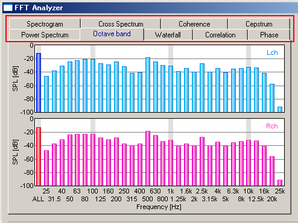

DSSF3 > RA > Reference Manual > FFT Analyzer

| Display | Description |
|---|---|
| Power Spectrum | Measures the power spectrum of the input signal. Sound level is displayed as a function of frequency. |
| Octave band | Octave band analysis is performed. Energy at each octave band is displayed in real time. 1/1, 1/3, 1/6, 1/12, and 1/24 octave is available. |
| Waterfall | Time-energy-frequency analysis is performed. Results are displayed in the 3D graph. |
| Correlation | Auto- and Cross-correlation functions are measured. |
| Phase | Phase difference between channels is displayed as a function of frequency. |
| Spectrogram | Energy at a given time and frequency is displayed as a color map in the 2D diagram. |
| Cross Spectrum | The crossing spectrum between channels on either side is displayed. The cross spectrum did Fourier transform of a mutual correlative function. |
| Coherence | The coherence function between channels on either side is displayed. The coherence function divided modulus square of a cross spectrum by power spectrum. |
| Cepstrum | A cepstrum is displayed. A cepstrum changes a power spectrum into logarithm, and carries out inverse Fourier transform further. |
DSSF3 > RA > Reference Manual > FFT Analyzer